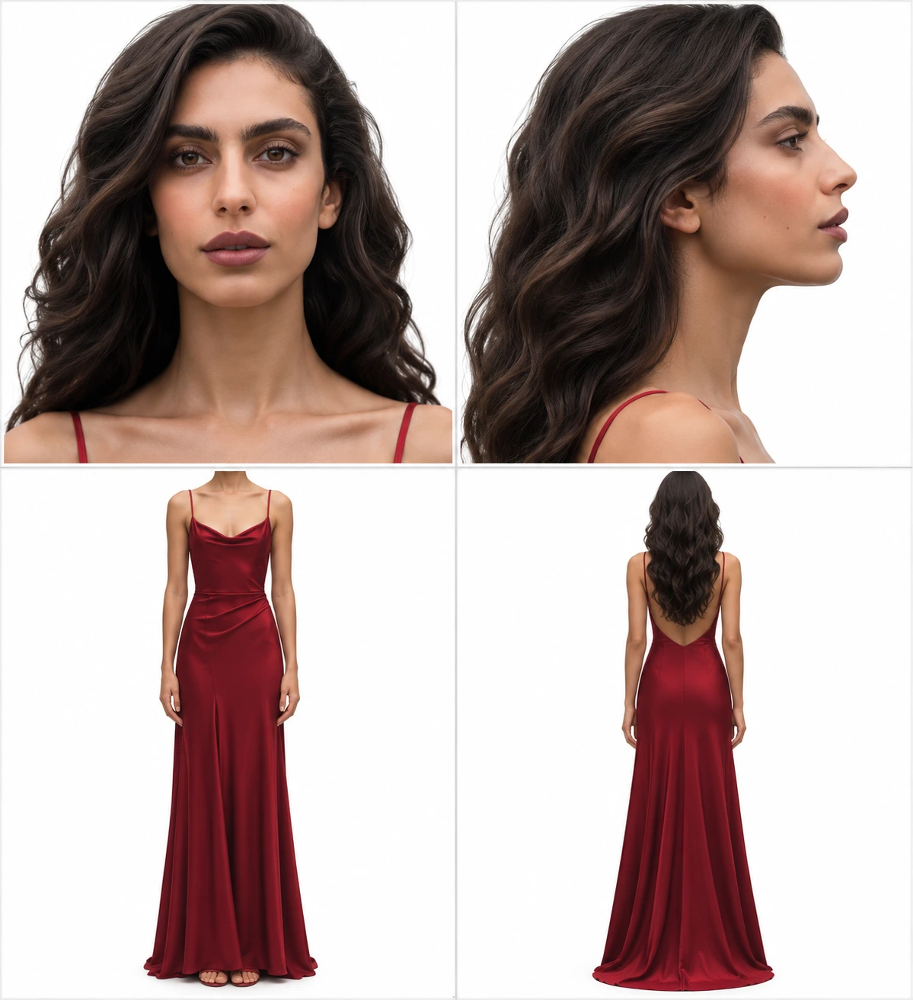
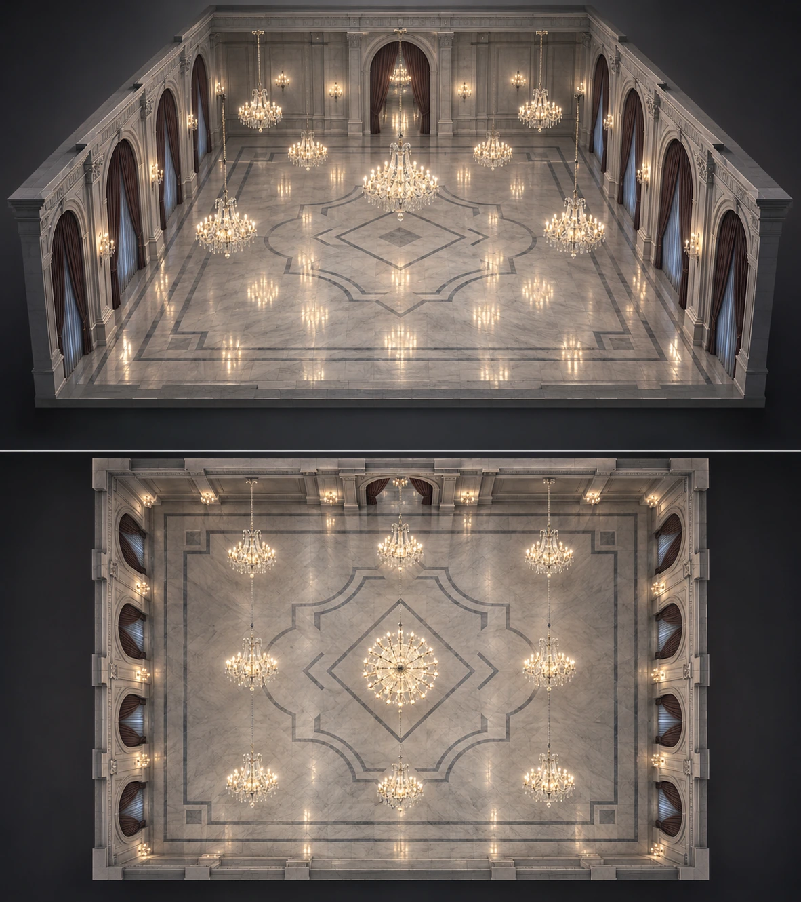
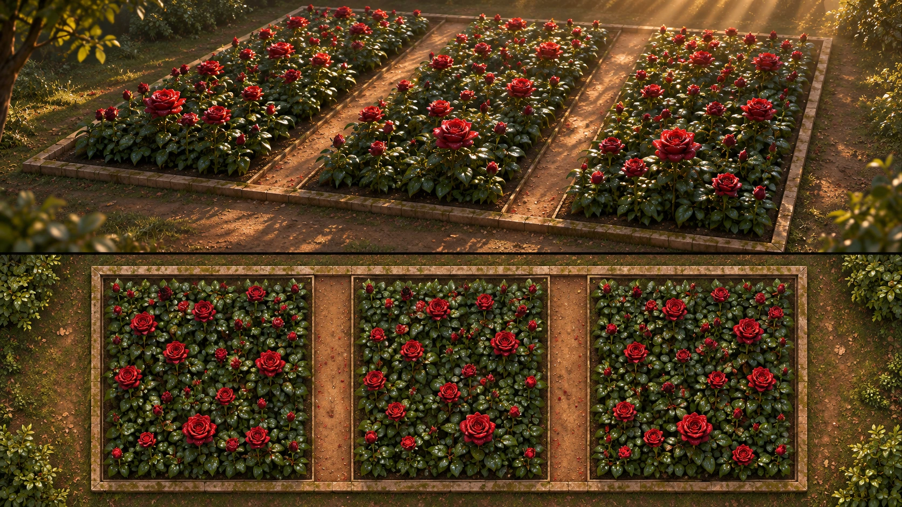
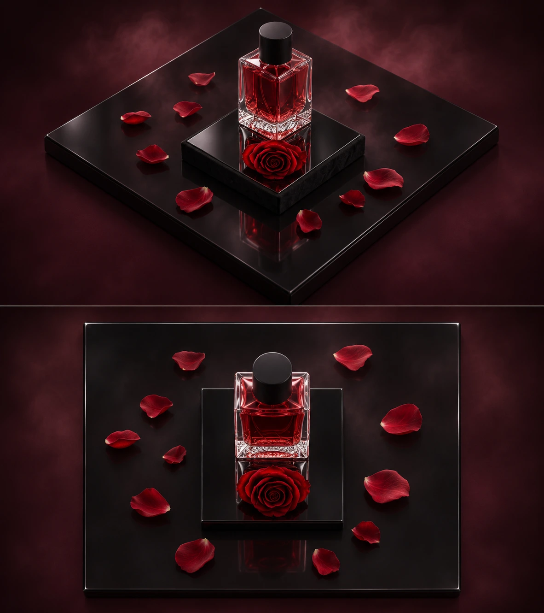
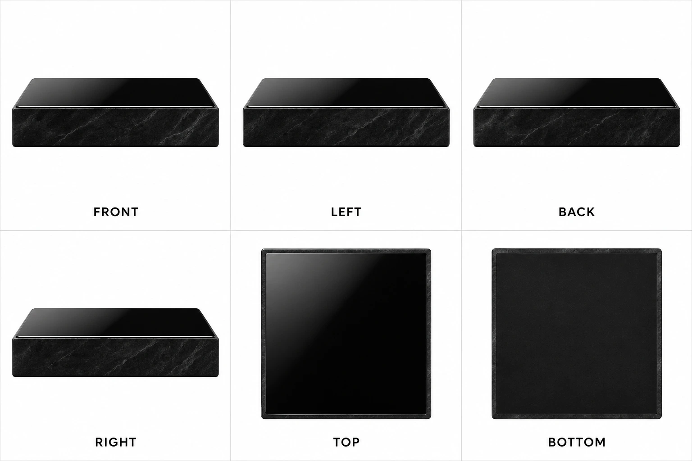

TVC广告
香水
正在连接在线视频…
视频简介
以红玫瑰、玻璃瓶身与暮色中的人物营造香氛氛围，结合喷洒、宴会和棚拍镜头，完成 Rouge Velours 香水的产品视觉叙事。
在快手观看原视频 ↗制作资产
角色资产

红裙女主
红裙女主的角色视觉设定，用于人物造型与镜头中的外观统一。
场景资产

水晶吊灯宴会厅
水晶吊灯宴会厅的场景视觉设定，用于空间布局、光影与镜头背景。

红玫瑰园
红玫瑰园的场景视觉设定，用于空间布局、光影与镜头背景。

红雾产品棚景
红雾产品棚景的场景视觉设定，用于空间布局、光影与镜头背景。
道具资产
Rouge_Velours香水瓶
Rouge_Velours香水瓶的道具视觉设定，用于叙事细节与画面中的产品或物件展示。
带露珠红玫瑰
带露珠红玫瑰的道具视觉设定，用于叙事细节与画面中的产品或物件展示。

黑色方形展台
黑色方形展台的道具视觉设定，用于叙事细节与画面中的产品或物件展示。
散落玫瑰花瓣
散落玫瑰花瓣的道具视觉设定，用于叙事细节与画面中的产品或物件展示。
剧本与分镜
01_剧本
《香水》叙事剧本 依据原片参考帧改编。以下为画面叙事，原声和对白待听校。 外景 · 玫瑰园 · 暮色 一枝深红玫瑰从暗绿枝叶中露出，花瓣上的露珠映着微光。玫瑰的红色切到透明玻璃瓶里的香水。 内景 · 暗红空间 女子取下瓶盖，将香水喷向手腕。红色雾线掠过皮肤。她闭眼轻触脸颊。画面穿插逆光下的玫瑰花苞。 内景 · 宴会厅 · 夜 水晶灯映在抛光石地面，宾客分列两侧，长裙女子在厅中出现。场面切回香水与鲜花。 内景 · 产品棚 玻璃瓶立在黑色镜面台上，红玫瑰和花瓣围在瓶边。红雾散开，瓶身标签定格。品牌字卡收尾。
02_脚本
《香水》分镜脚本 时间为采样帧定位段，具体切点和原声待逐镜复核。 | 时间（约） | 画面与剪辑 | 对应资产 | |---|---|---| | 00:00–00:04 | 露珠红玫瑰切到斜置瓶身特写 | 玫瑰、香水瓶 | | 00:04–00:08 | 手持瓶身取盖，切手腕与红色香雾 | 香水瓶 | | 00:08–00:14 | 女子侧脸、逆光花苞、女主脸部特写交叉 | 人物、玫瑰 | | 00:14–00:16 | 水晶灯下的宴会厅全景 | 宴会厅 | | 00:16–00:24 | 玫瑰与瓶标、抽象烟带、镜面底座和瓶身近景 | 香水瓶、花瓣、展台 | | 00:24–00:38 | 切回玫瑰园，再进入红雾棚景，展示标签与瓶体正卧姿态 | 玫瑰园、棚景、香水瓶 | | 00:38–片尾 | 黑底品牌字卡 ROUGE VELOURS | 字卡 |